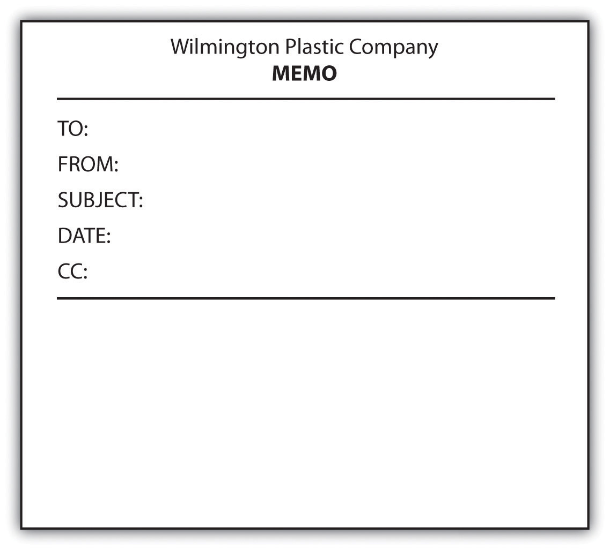

You probably know someone who has said, “I’m a lousy writer, but it doesn’t matter since I don’t write for a living and I’m not an English teacher.” You might have even made such a comment yourself. In reality, good writing can help you from the moment you apply for a job throughout your time in the workforce. And regardless of whether you are writing in academic or professional settings, good writing involves an awareness of voice, audience, and message.
You might think that people living in the age of technology do not need to learn business letter skills. After all, in today’s professional world, e-mails have replaced business letters as the primary mode of communication. However, many formal situations are still best handled with business letters, whether they are sent on paper or as an attachment to an e-mail.
When writing a business letter, if you use business letterhead that includes the company address and other contact information, you do not need to incorporate that information within the letter. The most common format of business letters, the block format, uses one-inch margins with all content flush against the left margin, including the body paragraphs. Some less common forms do use indentation. Business letters include the following parts, as shown in this sample:

When writing a business letter, keep these tips in mind:
As part of the process of applying for any job in any profession beyond the entry level, you are likely to have to produce two main written documents: a résumé and a cover letter or letter of application. Writing these documents well is often a key determiner in whether you get the job. To illustrate, we’ll follow a student, Joey Williams, through these two key professional writing challenges. Joey is a recent graduate of a master’s degree program in public relations who is seeking a position at a graphic design firm.
Common résumé formats vary with types of jobs and with the times, but regardless of the type of position you are seeking, your résumé should include some key features and some key information.
Effective résumés have the following features:
Every résumé should include the following information:
These résumé components are optional:
To ensure that your résumé is both current and appropriate for the position, you should search online for similar sample résumés. You should also run your résumé past the career placement services at your college and any people you know who are working in your field of interest. Here’s Joey’s generic résumé:
Along with sending a résumé when applying for a job, you will almost always want to send a cover letter. This suggestion holds true in both hard-copy and digital situations. A hard-copy cover letter should be formatted as a standard, typed business letter (for a sample, see Chapter 12 "Professional Writing", Section 12.1 "Writing Business Letters"). A digital cover letter should be either typed directly into a given window or copied and pasted into the window. If you copy and paste, check to make sure that the formatting holds.
When the job market is tight, just getting an interview is a major hurdle. Facing dozens and sometimes even hundreds of applicants, employers are looking for reasons to cut down their pool of potential interviewees. Don’t give them a reason not to interview you by writing a vaguely worded, overly general letter of application or résumé, especially when you can easily revise and tailor your approach to each position for which you are applying.
To target a cover letter means to write it specifically for an identified job. You can gather information to target your cover letter by looking carefully at the job description and by studying the company’s website. Let’s look at an example of an online job description that has caught Joey’s attention:
About the Job
GolinHarris is a leading international public relations firm and winner of PRWeek’s Large PR Agency of the Year 2010, 2010 Best Places to Work by the Los Angeles Business Journal, and numerous industry awards.
Our western region headquarters, based in Los Angeles, is currently seeking an ambitious and motivated PR professional to join our team as an Assistant Account Executive. The successful candidate will play an integral role and receive valuable hands-on experience by working on our Nintendo account. We are launching exciting programs in the next few weeks and this opportunity will not last long. Avid gamers are encouraged to apply now.
The candidate we seek will perform fundamental PR tasks such as aiding in production of media-related materials, pitching program highlights to the media, monitoring for quality and quantity of media coverage and managing client publications and resources materials.
What Do You Need to Be Considered?
About Us
As a member of the Interpublic Group (IPG), GolinHarris partners with a network of the communication industry’s best strategists across a variety of disciplines, including sports marketing, consumer research, branding, special events and advertising. We collaborate with these partners to continually advance our clients’ businesses.
At GolinHarris we recognize that there is much more to life than just work. Our benefits program has been designed to help GolinHarris employees and their families stay healthy, balance personal and career priorities, and build a solid and secure future. We offer a great workplace, culture, competitive salary, health care benefits (medical, dental and vision insurance), 401k and more.
GolinHarris is an Equal Opportunity Employer. EEO/AA.M/F/D/V.
Source: GolinHarris
As Joey prepares his cover letter, he’ll need to include, in three or four paragraphs, information about himself and his fitness for the position that complement what his résumé already reveals. Typical contents of the paragraphs of his cover letter might include the following:
Keep in mind that your cover letter is the first chance to present yourself and often the only chance. Besides being sure to include the most pertinent and valuable information you have to offer, be very careful that your letter is grammatically correct with no punctuation or spelling errors. Proofread it carefully yourself, and then, even if you think the letter is perfect, ask a trusted acquaintance to proofread it. Errors in this kind of high-stakes writing situation can be fatal to your chances of achieving your desired goal: getting your foot in the door professionally.
As he is planning his cover letter, Joey decides to apply what he has learned in his academic writing career to this all-important professional challenge. Thus, before writing, he fills out the statement of purpose he used six years before when he was a first-year college student:
| Voice | I am writing as a young, eager, well-educated, and flexible individual who wants to be a part of the GolinHarris team. |
| Message | I want to convey the message that I will bring extensive gaming, graphic design, and public relations experience and credentials to the position. |
| Audience | I want to write to the human resources department or hiring manager at GolinHarris. |
| Attitude | My attitude toward the subject is positive and confident, but also somewhat deferential, humble, and respectful of authority. |
| Reception | I want my audience to give me an interview because they realize they’ve got a hot local prospect who’s perfect for the job. |
| Tone | My tone toward my readers is professional, but creative, enthusiastic, and cutting-edge. |
Armed with his statement of purpose, Joey writes the following cover letter:
A memo is less formal than a business letter but more formal than an e-mail. Memos are usually sent within a company addressing a single issue or meeting and are typically short. A common feature of memos is the heading followed by a colon. Memos typically include the following set components.
Companies often have blank memo forms in digital and hard-copy formats.
Figure 12.1 Example of a Blank Memo Form
Online networkingCommunication that takes place over the Internet. refers to a variety of methods of talking to others over the Internet, including e-mailing. Since e-mailing is so common and has been around longer than the other methods, it will be dealt with as a separate entity here.
E-mailing started small in the 1960s and became more widespread by the 1990s. Today the idea of going a day without e-mails is incomprehensible to many people, both professionally and personally. Even though most working people in the United States have both personal and work e-mail, workplace e-mail guidelines make the two quite different. Failing to follow these guidelines for workplace e-mails can have a range of ramifications from mild embarrassment to termination from your job. The following guidelines are general and most of them will apply in most workplaces. You are likely to find, however, that your workplace has its own guidelines that you will need to learn and follow.
Here are some general workplace e-mail guidelines:
The e-mail guidelines in Section 12.4.1 "Using E-mail in the Workplace" also apply to other online networking situations. Whether you use other online networking tools will depend on your company. Having a general awareness of some of the other options is helpful when you join a company.
Table 12.1 "Some Other Online Networking Options" gives an overview of a few types of online networking options.
Table 12.1 Some Other Online Networking Options
| Networking Tool | Description |
|---|---|
| BlogsWeblog, or online journal. | Short for weblog, a blog is a personal online journal. Since blog content can show up in Internet searches, many businesses now maintain blogs as a means of sharing information with customers. |
| Niche networking sitesOnline site for communicating about a specific area of interest. | Specialty networking sites, such as for quilters, surfers, or vegans, serve as a hub for sharing ideas. |
| PodcastsAudio file that is posted online. | You can record and post audio files for others to download by subscription through a Real Simple Syndication (RSS) feed. |
| Professional networking sitesOnline communication location used for professional contacts. | Pay sites or sites with ad content can be used by job seekers to post their skills, by employers to find employees with needed skills, or by employees to network with others in the same field. |
| Social networking sitesOnline site intended for personal chatting. | Initially used only for personal interchanges, these are now also used by many businesses as a means of reaching out to customers. |
| Video sitesOnline location that can accommodate uploaded videos. | You can create video files and upload them onto the Internet for others to view. |
| WikisOnline location where groups can work together from different physical locations. | You can use these websites to collaborate on projects with invited group members. On such sites, group members at many different physical locations can work together by adding their input on a single document. |
| White-space social networking sitesOnline location where employees of a single company can meet and to which no one from outside the company has access. | These company networking sites are meant for internal communication and are not open to the public. |
Reword the following e-mail subject lines in a more concise manner.
Explain the problem with the following e-mail.